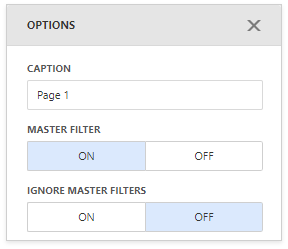

Tab Container
Like the Dashboard Item Group, the Tab Container dashboard item allows you to combine elements within a dashboard. The main Tab Container's purpose is to split the dashboard layout into several pages. For example, you can place common filter elements on a separate tab page to display only data dashboard items.

Create a Tab Container
To create a tab container, use the Tab Container button (the  icon) in the Toolbox. The created tab container always contains one empty tab page (Page 1).
icon) in the Toolbox. The created tab container always contains one empty tab page (Page 1).

Click the Add page button (the  icon) to add a new page to the tab container.
icon) to add a new page to the tab container.
A tab page can contain dashboard items and dashboard item groups. You can add them to a tab page using one of the following ways:
- Create a new item using the buttons inside the empty tab page.
- Drag a new item from the Toolbox and drop it to the tab page.
- Use drag-and-drop to move existing items to the tab page.
Note
Tab containers cannot be added to another tab container.
Interactivity
The tab page allows you to manage the interaction between dashboard items inside and outside the page.
The image below shows a tab page's default interactivity settings:

The Master Filter button controls whether the current tab page allows you to filter dashboard items outside the page using master filter items contained within the page. By default, this option is enabled: master filter items in the page can filter any dashboard items.
The Ignore Master Filters button allows you to isolate dashboard items contained within the tab page from external master filter items. By default, this option is disabled: external master filter items can filter the dashboard items contained within the tab page.